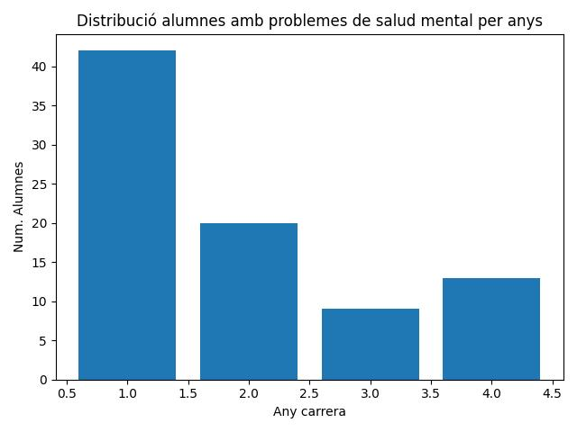

Representació d'estudiants amb problemes de salut mental als graus científics.
Les ciències en el nostre dataset estan compostes per els seguents graus.
| # | Nom del grau |
|---|---|
| 1 | Ingenieria Informàtica |
| 2 | Ingenieria en Telecomunicacións |
| 3 | Ingenieria |
| 4 | Ciències biomèdiques |
| 5 | Ciències Marítimes |
| 6 | Ciències Humanes |
| 7 | Biotecnología |
| 8 | Matemàtiques |
| 9 | Ciència de dades |
Les assignatures científiques representen un 57.33% de tots els registres.
Resultats obtinguts
Hem trobat un total de 77 homes i 95 dones que cursen graus d'Enginyeries, Matemàtiques i Ciències vàries. En aquets dos grups hem trobat que 43 homes tenen o han tingut algun problema de salud mental com depressió, ansietat o atacs de pànic i només 5 dels quals ha demanat ajuda. En el cas de les dones, 61 d'elles tenen problemes de salud mental i 6 han demanat algun tipus de ajuda.Com podem veure son xifres força elevades.
Problemes de salut mental per sexes
| Sexe | Problemes salut mental (%) |
|---|---|
| Masculí | 55.84% |
| Femení | 64.21% |
Demanda d'ajuda per sexes
| Sexe | Busca d'ajuda (%) |
|---|---|
| Masculí | 11.62% |
| Femení | 9.83% |
Només un 10.57% de persones dels dos sexes que han demanat ajud en total.
Any en el que es concentren més els problemes de salut mental
Distribució (Home/Dona) en graus de ciències.| Any | N. Alumnes | Percentatge |
|---|---|---|
| 1 | 79 | 45.93% |
| 2 | 38 | 22.09% |
| 3 | 40 | 23.25% |
| 4 | 15 | 8.720% |
Gràfica dels resultats

Podem veure com el 45.93% dels estudiants amb més problemes de salut mental als graus científics es concentren al primer any.
Amb aquest resultat podem formular una hipòtesi.
Hipòtesis
Podem veure que més de la meitat dels alumnes de graus com les enginyeries, matemàtiques i ciències vàries tenen un alt impacte a la salut mental dels estudiants.
Podria ser per alguna d'aquestes raons següents:
- A 1r i 2n, molts estudiants no saben si els i agrada la matèria, solen haver-hi assignatures troncals que no tenen molt a veure amb la grau i també, el canvi de batxillerat o cicles al model universitari porta a molts alumnes a posar-se nerviosos.
- Al 3r any normalment les assignatures són més pràctiques i més afins amb la grau escollida, per veterania ja saps com van els exàmens i més o menys ja t'has decidit si el grau t'agrada. De totes maneres, això no significa que les assignatures i els exàmens siguin més senzills.
- Al 4t any, els alumnes solen estar més tranquils, la pujada pot ser deguda al treball de final de grau i la seva defensa.